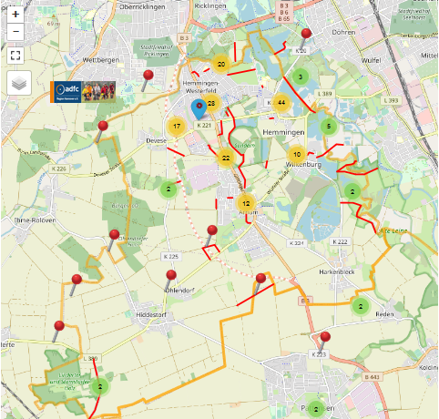
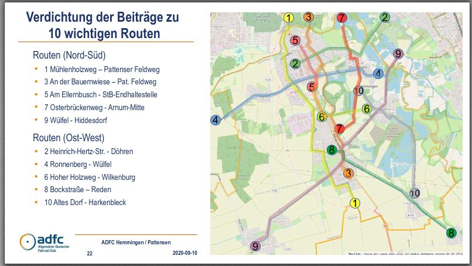

Dienstag, 23. März, von 18.30 Uhr bis ca. 20.00
Gesucht waren 2020 - Radwege für Frauen, Männer, Familien, Jugendliche
Für all die Fahrräder, Fixies, Anhänger, Lastenräder, Pedelecs…
Gefunden wurden die Hemminger Alltagsrouten!!!
Was ist aus den vielen Vorschlägen geworden, die vor einem Jahr im Bürgersaal zusammengetragen wurden? Der ADFC hat daraus eine Radwegestruktur ausgearbeitet und in der AG Radverkehr des Stadtrates vorgestellt.
Dazu gab es unterschiedliche Budget-Vorschläge von der Verwaltung und vom ADFC für den städtischen Haushalt 2021. In einer Online-Veranstaltung haben wir diese Alltagsrouten allen Interessierten vorstellen und das weitere Vorgehen diskutieren. Jetzt ist wieder die Unterstützung aller Radbegeisterten zur Umsetzung gefragt: Es geht um die Verkehrswende und in den städtischen Haushaltsberatungen und um das dazu erforderliche Geld.
Zu userer Mängelkarte für Hemmingen und Pattensen

PS: Das ADFC Routenkonzept “Präsentation” wurde am 10. Sept. 2020 auf der 32. Sitzung des Ausschusses für Stadtentwicklung und Umwelt vorgestellt.
